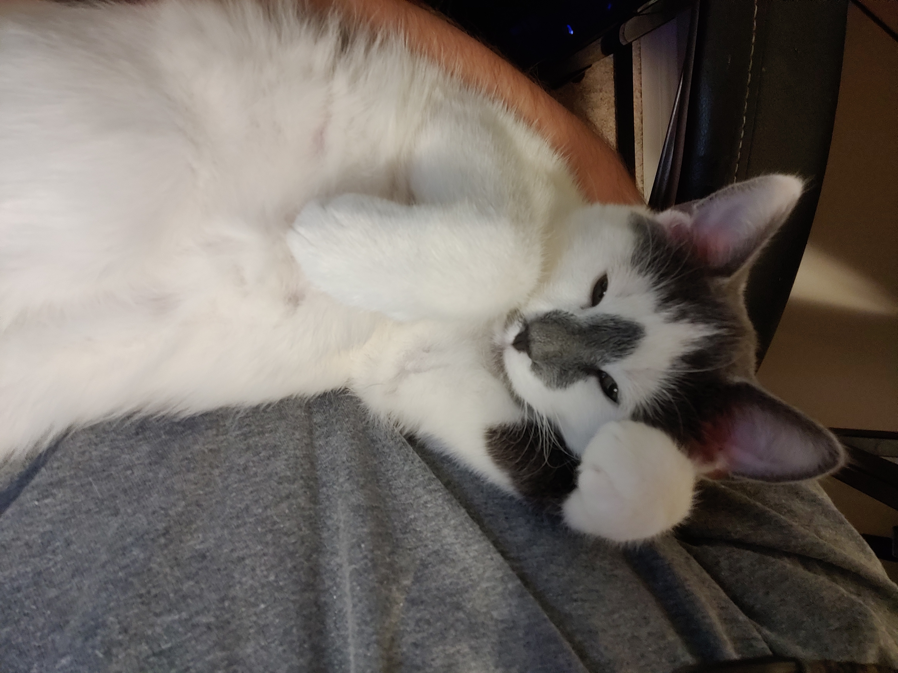
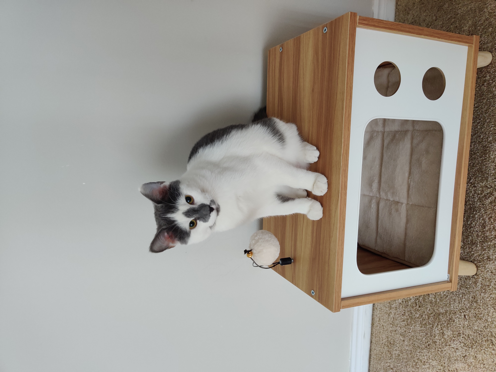
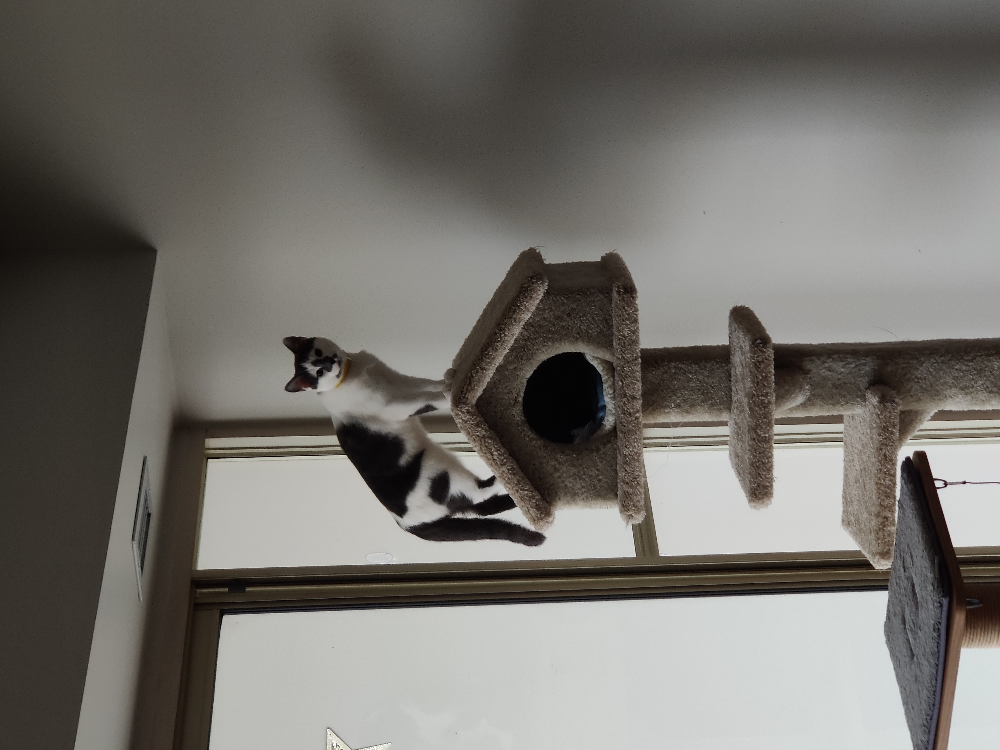
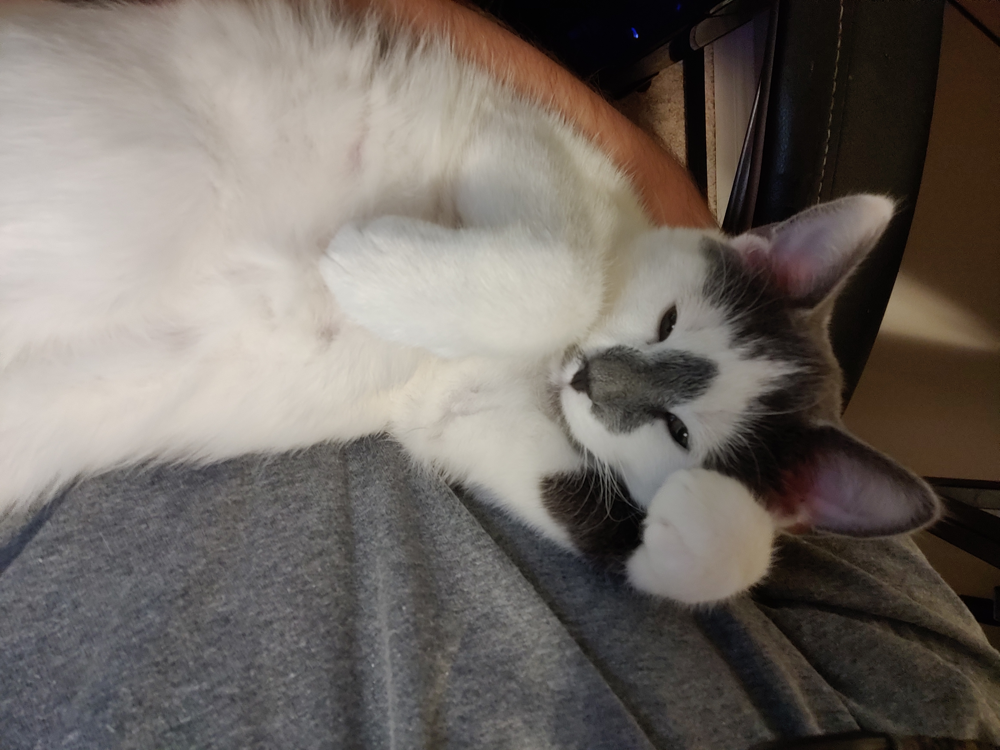
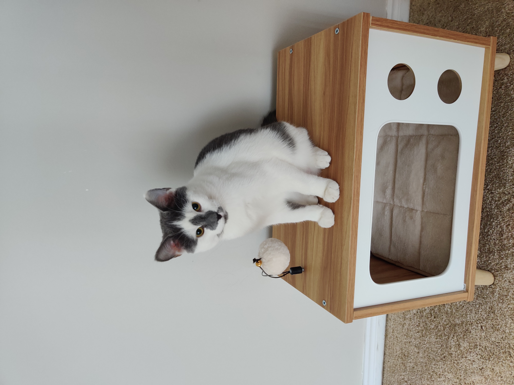
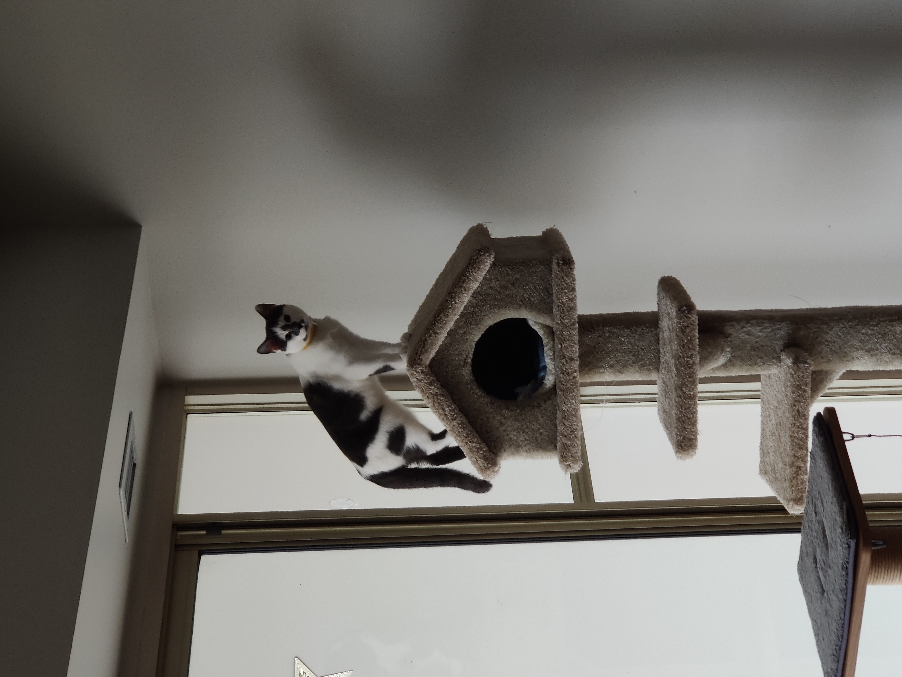

Loki, "The Trickster"
Loki is an 8 month old Tabby kitten. He's not the sharpest tool in the shed, even for his age, and is very clumsy. He will also eat just about anything, so you really have to be careful what you leave around him. He especially likes to nibble people's toes. He does not care what you do with him, you can pick him up, flip him around, toss him. When he isn't full of energy and running around, he loves to cuddle.

Loki's vet loved him so much that they sent him a letter to thank him for coming after he got his shots.
 





Here is a video of Loki snoring: https://youtu.be/6_oSASW00oI
Loki loves to come to class with me, even if he's a bit of a slow learner. Here he is watching professor Pulling teach Java with rapt attention.
Loki also likes to eat with us. Even though he never manages to get anything off of our plates, he still likes to watch and always wants to know what we're eating.